Version 1.04
- Mikael Matveinen | implementation |
- Tuukka Takala | technical architecture |
For updates and other information, see http://ruisystem.net/
RUIS (Reality-based User Interface System) gives hobbyists and seasoned developers an easy access to the state-of-the-art interaction devices, so they can bring their innovations into the field of virtual reality and motion controlled applications. Currently RUIS for Unity includes a versatile display manager for handling several display devices, and supports the use of Kinect and PlayStation Move together in the same coordinate system. This means that avatars controlled by Kinect can interact with PS Move controlled objects; A player represented by a Kinect-controlled barbarian avatar can grab a PS Move controller that is rendered as a hammer within the application for example.
Try example scenes at \RUISunity\Assets\RUIS\Examples\ -directory. You can develop and test your own motion controlled applications even if you have only a mouse and keyboard, because in RUIS they can emulate 3D input devices.
Most RUIS scripts have comprehensive tooltip information, so hover the mouse cursor over any variables of RUIS components in Unity Editor’s Inspector tab to learn about RUIS.
RUIS for Unity requires Unity 4 (both Windows and OSX are supported). It has been tested with version 4.3.4.
PS Move controllers are supported via Move.me software for PlayStation 3. Currently Kinect and PrimeSense sensors are supported only via OpenNI software.
You only need to follow through this section if you plan to use Kinect with RUIS on your computer, otherwise you can skip this. RUIS for Unity takes advantage of “OpenNI Unity Toolkit” that requires Win32-bit version of OpenNI 1.5.4.0 (OpenNI 2.0 is not yet supported though). If you have Windows 8 or “Kinect for Windows” you should also read the Troubleshooting section in the end of this readme.
You need to install OpenNI and NITE middleware before using Kinect in RUIS. Check your installation validity by running the NiSimpleViewer example application at \OpenNI\Samples\Bin\Release\ directory. If it shows depth image from Kinect, you have successfully installed Kinect.
Before installing, make sure that you have uninstalled all existing OpenNI, NITE, Primesense, and SensorKinect instances from Control Panel’s “Uninstall a program” section. Reboot and install the following files in the following order:
http://www.openni.org/wp-content/uploads/2012/12/OpenNI-Win32-1.5.4.0-Dev1.zip
http://www.openni.org/wp-content/uploads/2012/12/NITE-Win32-1.5.2.21-Dev.zip
https://github.com/avin2/SensorKinect/raw/unstable/Bin/SensorKinect093-Bin-Win32-v5.1.2.1.msi
http://www.openni.org/wp-content/uploads/2012/12/Sensor-Win32-5.1.2.1-Redist.zip
If the links have gone dead, google for those file names.
Windows 8
Using the same files as for Windows 7, follow this procedure:
Kinect for OSX is not supported at the moment. RUIS uses “OpenNI Unity Toolkit” that supports Win32-bit version of OpenNI only.
RUIS features MecanimBlendedControllableCharacter prefab, which is a feature rich first-person character controller. This prefab’s scripts automatically use Oculus Rift orientation tracking and combine that with positional tracking from either Kinect, PS Move, or Razer Hydra. The tracking device is decided in runtime depending on which devices are enabled in RUIS’ InputManager.
The MecanimBlendedControllableCharacter prefab contains a human 3D model that is animated with Kinect. You can substitute the default model with your own. Mecanim walking animation overtakes pose input from Kinect whenever the player is moving the character either with keyboard, gamepad, PS Move Navigation controller, or Razer Hydra controller. You can use your own Mecanim animation graph and use RUIS features to write a script that blends your animation with Kinect pose data in real-time. See KinectTwoPlayers or OculusRiftExample at \RUISunity\Assets\RUIS\Examples\ and modify the MecanimBlendedControllableCharacter gameobjects to get started.
Use mouse and keyboard for controlling the MecanimBlendedControllableCharacter. See Controls section below.
Place the Kinect so that it can see you and the floor. The avatar’s pose and limbs’ length is tracked by Kinect, and you need to stand in front of the Kinect during gameplay while wearing the Oculus Rift. You will need a long display cable and an USB extension cord. Some people have gone wireless with the Rift using Asus Wavi and a custom battery pack. We recommend that you use a wireless gamepad to control the MecanimBlendedControllableCharacter locomotion when only Kinect is enabled.
Place the Razer Hydra base station on your desk so that its cable ports are facing away from you, like you would do with any Razer Hydra game. One controller (RIGHT) will be wielded normally in your hand and is used for avatar locomotion, grabbing objects, etc., while the other (LEFT) needs to be attached on the left side of your head for head tracking:
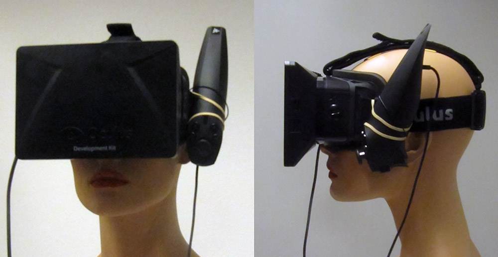
You can use e.g. a rubber band to tie the Razer onto the Rift’s strap. When the scene starts, it asks you to point the LEFT controller (on the head) towards the Razer Hydra base station and to press the trigger button. Same is repeated for the hand-held RIGHT controller.
HIGHLY EXPERIMENTAL: In this head tracking scheme Kinect provides a rough estimate of the Razer Hydra base station location, which is combined with the Razer controller’s local position. Apply the procedures from the above two sections (Oculus Rift + Kinect and Oculus Rift + Razer Hydra) and make sure of the following: 1) The Razer Hydra controller must be in the same pose as in the above photo with relation to your head (i.e. facing downwards in a 90 degree angle). 2) Attach the Razer Hydra base station in the front of your belly in a 90 degree angle, so that its cable ports are pointing towards the floor:
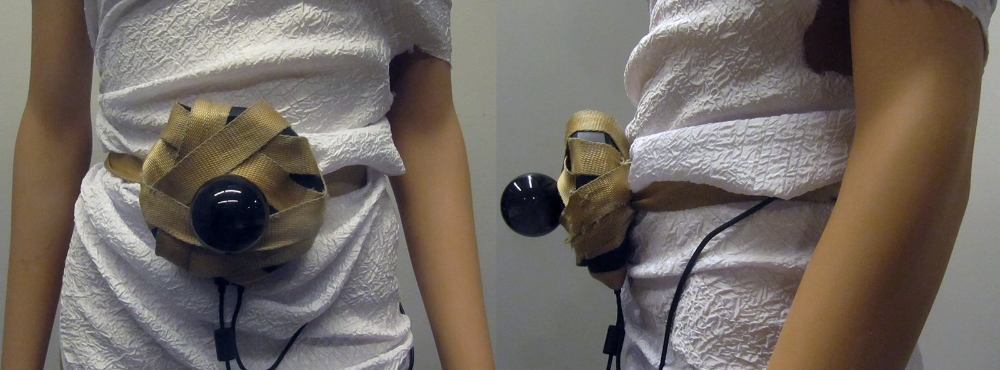
Duct tape is the easiest and messiest option. The base station should be tightly attached against your stomach to minimize any wobble when you’re moving (such movement will be reflected in the head tracking). Depending on your height, belly, and how accurately you placed the base station on your belt, the viewpoint can initially appear outside of the avatar. You can adjust that offset with panning and base pitch angle buttons of the LEFT Razer Hydra controller. See Head tracking controls section for details.
If PS Move is enabled, it will be used for head tracking regardless of other enabled devices. Attach the PS Move controller designated as GEM[0] in Move.me software on the topmost strap of Oculus Rift (two rubber bands work well):
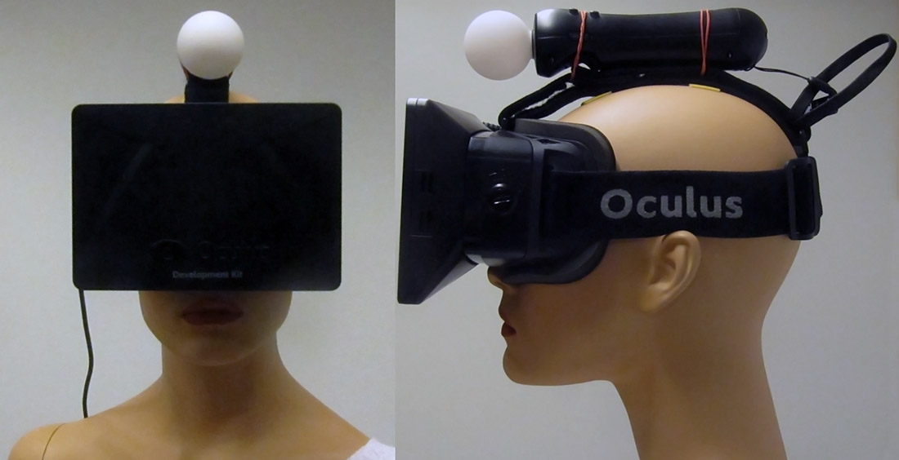
The strap and the rubber bands should be kept tight to minimize any controller wobble when you move your head. The Move button should be pointing up towards the ceiling when you’re standing straight. PS Navigation controller needs to have its ID set to 5 (see instructions for that in PlayStation Move configuration section) so that it can be used for MecanimBlendedControllableCharacter locomotion. In the demo, PS Move GEM[1] is a 3D wand used for grabbing and manipulating objects, and GEM[2] is a baseball bat.
If both PS Move and Kinect are enabled, then you need to calibrate their coordinate systems by displaying the menu (ESC), and clicking the “Calibrate PS Move & Kinect (and Save)” -button (see Kinect and PS Move calibration section for details).
If PS Move is enabled and Kinect is disabled, you may need to edit y-value of translate element in the file ‘calibration.xml’ for the head position to appear at correct altitude.
You can have your Unity application render 3D graphics on any number of mono and stereo displays when you use RUIS and run your application in windowed mode. You need to have your displays arranged sideways in your operating system’s display settings, because RUIS automatically creates a game window where all the viewports are side-by-side.
For 3D displays, side-by-side and top-and-bottom modes are supported. RUIS display configuration can be edited through the DisplayManager gameobject that is parented under RUIS gameobject. When adding new displays in RUIS, keep in mind that each display (parented under DisplayManager gameobject) needs to have a RUISCamera gameobject attached to it. In order to learn RUIS’ display manager capabilities, see DisplayManagerExample at \RUISunity\Assets\RUIS\Examples\
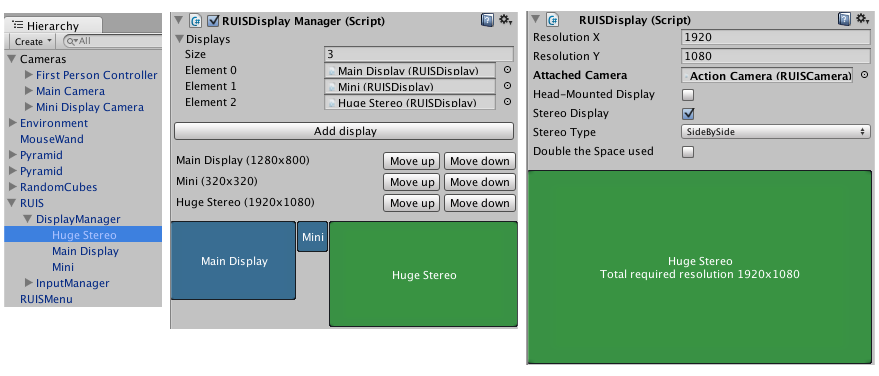
RUIS for Unity can be used to easily create a custom 3D user interfaces with custom selection and manipulation schemes by the use of so called Wand prefabs. Currently supported wands (input devices) are: MouseWand, PSMoveWand, RazerHydraWand, and SkeletonWand (Kinect). These prefabs are found at \RUISunity\Assets\RUIS\Resources\RUIS\Prefabs\Main RUIS\Input Methods\. To see how to use these prefabs, check out BowlingAlley (its PSMoveHand gameobject) and MinimalScene (its MouseWand) at \RUISunity\Assets\RUIS\Examples\
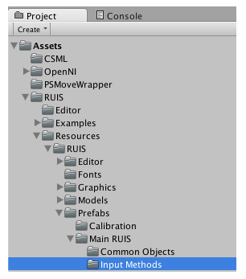
If you do not have Kinect, Razer Hydra, or PS Move, then use MouseWand prefab that emulates their behavior with a mouse for object manipulation purposes. When a scene is playing, the above mentioned Wands are used to manipulate gameobjects that have a RUISSelectable script, Mesh Renderer, Rigidbody, and Collider components. See crate gameobjects in any of the examples. The selection ray of a Wand is checked against the Collider components (you can have several of them in a hierarchy under one object) of a gameobject to see whether it can be selected (triggered with a button or a gesture in case of Kinect) and manipulated by the Wand.
In RUIS for Unity the 3D coordinate system unit is meters, which reflects to the position values of PSMoveWand, SkeletonWand, and Kinect-controlled avatars. You can translate, rotate, and scale the coordinate systems of SkeletonWand and PSMoveWand by parenting them under an empty gameobject and applying the transformations on it.
Please note that in many 3D user interfaces it makes sense to disable gravity and other physical effects of the manipulated objects; For example, in a CAD interface you don’t want geometric shapes to fall down after moving them.
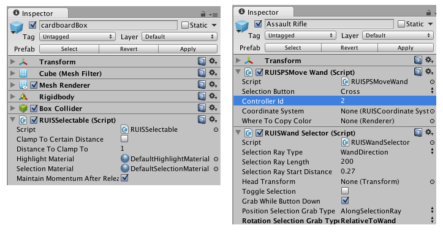
If you have Move.me software for PlayStation 3 and want to use PS Move controllers in your RUIS for Unity scenes, tick the “PS Move Enabled” option in InputManager gameobject (parented under RUIS gameobject). Otherwise keep that option unchecked, because the scene will be frozen for a long time when entering playmode if RUIS is trying to connect to a Move.me server that is not available.
Be sure to set the IP address and port parameters of InputManager to correspond to the ones that Move.me software is displaying. When building your application with PS Move controller support, copy and paste the inputConfig.xml file from \RUISunity\ to the folder where the built executable is, and edit that file so that the IP and port are identical to what Move.me displays.
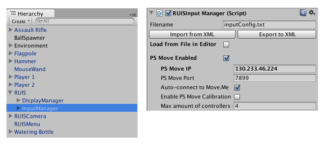
If you have successfully installed OpenNI and want to use Kinect in your RUIS for Unity scene, make sure to tick the “Kinect Enabled” option in InputManager gameobject (parented under RUIS gameobject). You also need an avatar gameobject with “RUIS Skeleton Controller” script. You can use ConstructorSkeleton and Mannequin prefabs that are located in \RUISunity\Assets\RUIS\Resources\RUIS\Prefabs\Main RUIS\Common Objects\ . Please note that you can use rigged models with either a hierarchical bone setup (e.g. ConstructorSkeleton) or a flat, one-level bone setup (e.g. Mannequin). For latter ones, you need to uncheck the “Hierarchical Model” option in the “RUISPlain Skeleton Controller” script.
You can translate, rotate, and scale your Kinect-controlled avatars by parenting them under an empty gameobject and applying the transformations on it.
After calibrating Kinect in RUIS (see “Kinect and PS Move calibration” section of this document), you can take advantage of the following useful features:
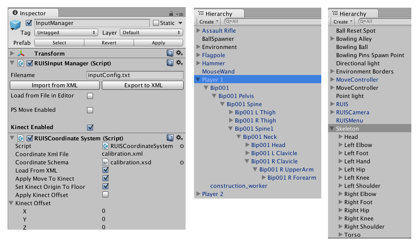
Calibration is needed for using Kinect and PS Move controllers together in the same coordinate system, and for aligning Kinect coordinate system even if you do not have PS Move controllers.
Calibration needs to be performed only once, but you have to do it again if you move either Kinect or PS Eye camera. While calibrating, it is important that Kinect sees the floor properly (see the image below for an example). Calibration is done via a special calibration scene ( RUISunity\Assets\RUIS\Scenes\calibration.unity ), that can be run by pressing ESC key and choosing “Calibrate” inside your scene (it must have RUIS and RUISMenu prefabs). You can return to the previous scene by pressing ESC key in the calibration scene and choosing “End Calibration”.
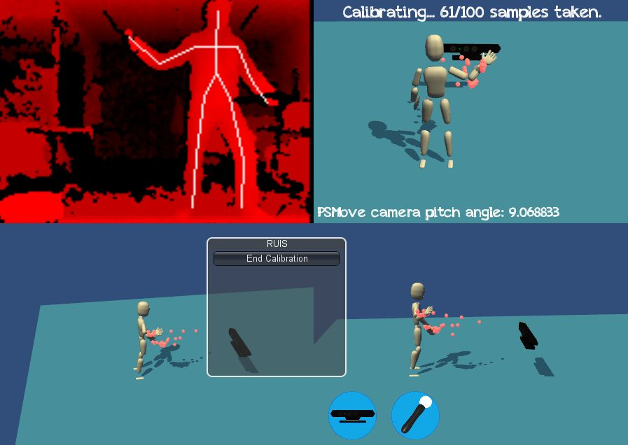
If you are holding a PS Move controller in your hand, the Kinect-controlled avatar’s hand and the PS Move’s virtual representation do not appear exactly in the same position even with perfect calibration, because avatar bones are not scaled to Kinect detected bone lengths and there is no snapping of hand locations to handheld PS Move locations. These features will be added in a future release of RUIS for Unity.
If you do not use PS Move controllers, then the calibration process can be used to aligning the Kinect coordinate system’s XZ-plane with floor plane. Calibration results are saved at \RUISunity\calibration.xml.
For an example of how to use Kinect and PS Move together, please see the BowlingAlley at \RUISunity\Assets\RUIS\Examples\
NOTE:
Before calibrating Kinect and PS Move coordinate systems to match each other, you should keep thrusting your PS Move controller towards and away from your PS Eye camera, until the “PS Eye pitch angle” in the RUIS calibration scene’s viewport converges within 0.1 degree. This is because PS Eye needs to see PS Move controller moving for awhile before Move.me software can reliably estimate the pitch orientation of PS Eye. When you calibrate after the pitch angle has converged, this ensures that the saved coordinate system calibration between Kinect and PS Move will be as accurate as it can be even after restarting your computer and PlayStation. Please note that Move.me running on PlayStation does not save the pitch angle, and after restarting it, the pitch angle converges again slowly while you are using the PS Move controller in front of the PS Eye camera.
Examples of using RUIS for Unity can be found at \RUISunity\Assets\RUIS\Examples\
Following two points apply to BowlingAlley and other scenes where you want to use PS Move and Kinect in the same coordinate system:
This example presents MecanimBlendedControllableCharacter gameobject, which is a versatile beast. Go to InputManager gameobject (parented under RUIS gameobject) and enable any of the following devices that you have connected to your PC: Kinect, Razer Hydra, and PS Move. These can be used in positional head tracking for Oculus Rift. When the scene is running, you can control the constructor character with keyboard, gamepad, PS Move Navigation controller, or Razer Hydra controller.
This example demonstrates how you can create a multiuser Kinect application in RUIS. The Kinect avatars are equipped with Collider components so that they can push objects around. Also notice how the Kinect-controlled SkeletonWands can be used for object manipulation. Currently the only selection and release gesture for SkeletonWands is hold, where the selectable object highlighted by a SkeletonWand is selected and released by holding the Wand (your hand) still for 2 seconds while pointing at the object.
Bowling with PS Move controller #0: Use trigger button to grab the bowling ball and release it on your throw. Move-button resets the bowling ball position, and triangle-button places the bowling pins. Kinect is used to control a simple mannequin avatar (Mannequin gameobject). Notice how Mannequin’s body parts are all parented below it in a flat fashion and that the “Hierarchical Model” option is unchecked in its script, as opposed to Constructor gameobject parented under the MecanimBlendedControllableCharacter gameobjects in KinectTwoPlayers and OculusRiftExample scenes.
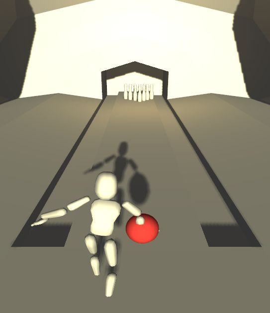
Run the scene to see how settings at DisplayManager gameobject affect the rendered multi-display output. Additionally you can use mouse, space-key, and WASD-keys to control a simple first person movement. A MouseWand prefab is present, so you can use left mouse button to grab cube objects.
This scene is a good starting point for a new RUIS scene. You can delete the Floor, Crate, Directional light, and MouseWand gameobjects.
Keyboard | Gamepad | |
Move forward / backward | W / S | Left analog stick |
Strafe left / right | A / D | Left analog stick |
Turn left / right | Q / E | Right analog stick |
Jump | Space | Joystick button 1, 5 |
Run | Shift | Joystick button 0, 4, 7 |
When Kinect and Jump Gesture are enable, you can jump in real life to make your avatar jump; You need to stand at least 2 meters away from the Kinect, and your both feet need to clearly lift from the ground.
Razer Hydra (RIGHT, hand-held) | PS Navigation controller (ID 5, hand-held) | |
Move forward / backward | Analog joystick | Analog joystick |
Strafe left / right | Analog joystick | Analog joystick |
Turn left / right | Buttons 3 / 4 | X / O |
Jump | Bumper button | L1 |
Run | Joystick button | L2 |
PS Move controller (GEM[1], hand-held) | ||
Grab object | Trigger button | Trigger button |
PS Move controller (GEM[2], hand-held) |
Razer Hydra (LEFT, worn on left ear) | PS Move controller (GEM[0], worn above head) | Keyboard | |
Reset Oculus Rift yaw | Bumper + Start | Move button | Return key |
Start / stop Rift’s automatic calibration | F5 | ||
Start / stop Rift’s manual calibration | F6 | ||
Show / hide Rift’s compass | F8 | ||
Below options are available in the Kinect + Razer Hydra mode | |||
Pan left / right | Bumper + Analog joystick | ||
Pan up / down | Bumper + Analog joystick | ||
Increase base pitch | Bumper + Button 3 | ||
Decrease base pitch | Bumper + Button 1 |
You can start Oculus Rift’s magnetic drift correction process by pressing either F5 or F6 anytime during a scene. Alternatively, you can set the automatic or manual drift correction enabled from the menu (ESC), in which case the said process will start automatically each time you start the scene.
Microsoft released Kinect for Windows and Kinect SDK, but they are not compatible with OpenNI. The kinect-mssdk-openni-bridge is an experimental module that connects Kinect SDK to OpenNI and allows people with Kinect for Windows to use OpenNI applications. This bridge _might_ get TurboGrandma demo to work with Kinect for Windows but there are no guarantees:
https://code.google.com/p/kinect-mssdk-openni-bridge/
When starting the demo, Razer Hydra buttons sometimes get “stuck” and the avatar moves automatically even without touching the buttons. If this happens, restarting the demo or unplugging and reconnecting the Razer Hydra USB cord can help. Razer Hydra can also sometimes get confused about directions or lose one controller altogether, in which case you need to restart the demo.
Check that your computer and PlayStation are connected to the same network, and that the PlayStation is able to obtain an IP address. Make sure that the address for Move.me server and port in InputManager gameobject is the same as displayed in the Move.me software on PlayStation. Also make sure that “Load from file in editor” is disabled in the InputManager. If you successfully connect RUIS to Move.me server, the PlayStation3 screen should display something like this:
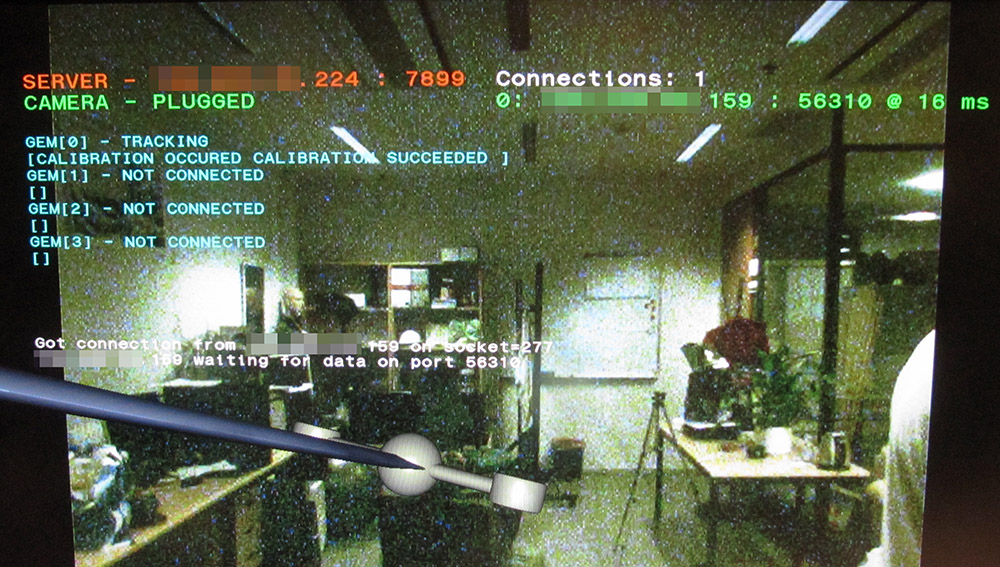
If RUIS for Unity is not able to connect to PlayStation via TCP (Move.me software displays “Connections: 0”), please check your firewall settings. If your application is connected to Move.me server but does not update PS Move state this may also be a firewall issue (Move.me sents PS Move state over UDP to RUIS) .
Unity editor and individual standalone executables have to be allowed through the firewall. In a standalone build you will have to set the IP address and port inside a file named inputConfig.txt that needs to be located in the same folder where the standalone executable file is. For an example of the file format please check the file provided in \RUISunity\.
In the current RUIS for Unity version boolean values that convey PS Navigation controller button states work poorly because the underlying PS Move wrapper that we use is buggy. This will be fixed soon.
Wearing head-mounted-displays while standing up, moving, walking, or jumping is dangerous to your health and potentially deadly. Author of this software recommends you to avoid the aforementioned actions, and if you choose to perform them anyway, you do it at your own risk. The author of this software cannot be held responsible in any way for any consequences.
THE SOFTWARE IS PROVIDED "AS IS" AND THE AUTHOR DISCLAIMS ALL WARRANTIES WITH REGARD TO THIS SOFTWARE INCLUDING ALL IMPLIED WARRANTIES OF MERCHANTABILITY AND FITNESS. IN NO EVENT SHALL THE AUTHOR BE LIABLE FOR ANY SPECIAL, DIRECT, INDIRECT, OR CONSEQUENTIAL DAMAGES OR ANY DAMAGES WHATSOEVER RESULTING FROM LOSS OF USE, DATA OR PROFITS, WHETHER IN AN ACTION OF CONTRACT, NEGLIGENCE OR OTHER TORTIOUS ACTION, ARISING OUT OF OR IN CONNECTION WITH THE USE OR PERFORMANCE OF THIS SOFTWARE.